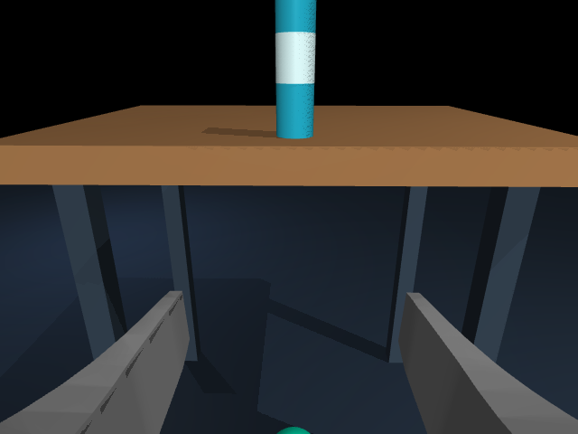

A2 × PiPER / GRASPNET BASELINE
站稳，然后抓住。
从零位出发，观察点云、选择位姿，完成一次有接触证据的抓取。
正在读取实验单次仿真 · 固定站立基座
YOUR EXPERIMENT
连接本地仿真服务…自己摆场景，重新抓一次。
距离沿 A2 机身原点的前方 X 轴计算；桌子与目标同步前后移动。
结果来源正在读取…
本次运行各环节时间戳 · 待运行
运行后显示 DC1、点云、GraspNet、MoveIt 和抓取确认的时间。
调整参数可实时预览位置，再点击运行抓取。查看本次日志 ↗

世界坐标系 · Z 向上
ROS2 / MoveIt · A2 固定站立 · 零位启动
载入 A2 + PiPER 模型官方连杆网格 · MuJoCo 实际轨迹
XYZ
00.00 / 11.96 s
零位预抓取接近闭合抬升保持放回松爪退出回零完成
目标抬升0.0 cm
双指接触0 / 2
夹爪开口70.0 mm
物理时间0.00 s
CONTACT, NOT TELEPORTATION
把“抓住”落实到物理证据。
抬升和接触同时达标，才记录为本次成功。
保持阶段最低抬升— cm验收要求 > 8 cm
双指接触覆盖— %最后 2 秒保持阶段
放置验证未启用松爪后目标由桌面支撑